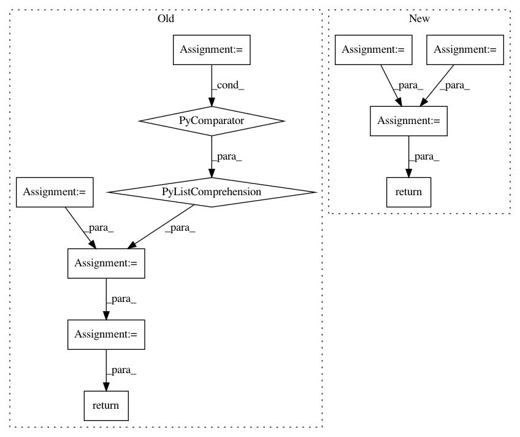

62859ba05a9dff7677b6946077544bb9a224c8cc,pymc3/variational/opvi.py,Approximation,logp,#Approximation#Any#,960
Before Change
return self.logq(z) / self.normalizing_constant
def logp(self, z):
factors = ([tt.sum(var.logpt)for var in self.model.basic_RVs] +
[tt.sum(var) for var in self.model.potentials])
p = self.to_flat_input(tt.add(*factors))
p = theano.clone(p, {self.input: z})
return p
def logp_norm(self, z):
t = self.normalizing_constant
factors = ([tt.sum(var.logpt) / t for var in self.model.basic_RVs] +
After Change
def logp(self, nmc=None):
if nmc is None:
_logp = self.single_symbolic_logp
nmc = 1
else:
_logp = self.sized_symbolic_logp
_logp = _logp / pm.floatX(self._n_samples)
return self.set_size_deterministic(_logp, nmc, 0)
def logp_norm(self, nmc):
return self.logp(nmc) / self.normalizing_constant
In pattern: SUPERPATTERN
Frequency: 7
Non-data size: 11
Instances
Project Name: pymc-devs/pymc3
Commit Name: 62859ba05a9dff7677b6946077544bb9a224c8cc
Time: 2017-06-28
Author: maxim.v.kochurov@gmail.com
File Name: pymc3/variational/opvi.py
Class Name: Approximation
Method Name: logp
Project Name: NifTK/NiftyNet
Commit Name: 135a56e0935fbb04811f8ce7b9f514f498212f71
Time: 2018-07-25
Author: wenqi.li@ucl.ac.uk
File Name: niftynet/layer/crf.py
Class Name:
Method Name: ftheta
Project Name: dask/distributed
Commit Name: 383ea0326ae103b5d5e0b62ed9c3cb18510c5b9e
Time: 2021-02-17
Author: jakirkham@gmail.com
File Name: distributed/comm/tcp.py
Class Name: TCP
Method Name: write
Project Name: deepfakes/faceswap
Commit Name: 2bcb7d572ac8fdacceb56d5cbd5b05fad8c71e5e
Time: 2021-03-23
Author: 36920800+torzdf@users.noreply.github.com
File Name: tools/sort/sort.py
Class Name: Sort
Method Name: sort_blur
Project Name: dpressel/mead-baseline
Commit Name: 8a420e8ef11ebf828e5e5b33e8a830eb74c39d6a
Time: 2020-03-09
Author: blester125@gmail.com
File Name: baseline/services.py
Class Name: ClassifierService
Method Name: predict
Project Name: HyperGAN/HyperGAN
Commit Name: e2cf1e4f51b9e10056fb79bdefd3de769131a8cc
Time: 2020-02-09
Author: martyn@255bits.com
File Name: hypergan/configurable_component.py
Class Name: ConfigurableComponent
Method Name: layer_avg_pool
Project Name: OpenNMT/OpenNMT-py
Commit Name: 685126644ae540be72eb662527269a0395e2c9eb
Time: 2017-09-05
Author: bpeters@coli.uni-saarland.de
File Name: onmt/IO.py
Class Name:
Method Name: make_features